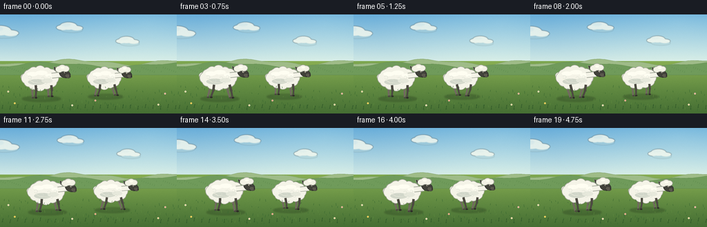
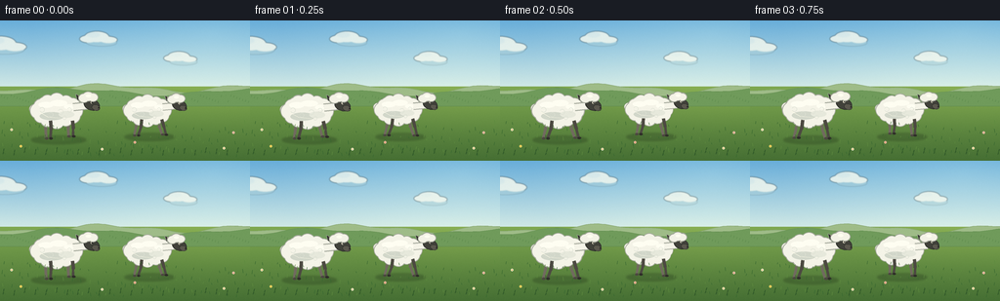

CODING AGENTS AS PIXEL WORLD MODELS
traex/DeepSeek-V4.1-Flash · instance_preservation_0016
点击播放 · 原生 RGB 像素
逐轮保存的候选
回放视频、检查图与代码变化。
每份候选均可单独播放。实际图片检查记录在下方工具轨迹中。
候选 01播放与检查图
点击播放 · 原生 RGB 像素


展开代码变化
--- 上一保存版本
+++ 本次保存版本
@@ -0,0 +1,426 @@
+from __future__ import annotations
+
+import math
+from pathlib import Path
+
+import numpy as np
+from PIL import Image, ImageDraw, ImageFilter
+
+import artifact_io
+
+
+WIDTH = 256
+HEIGHT = 144
+FRAMES = 20
+FPS = 4.0
+SUPERSAMPLE = 4
+S = SUPERSAMPLE
+
+
+def scaled_box(cx: float, cy: float, rx: float, ry: float) -> tuple[int, int, int, int]:
+ return (
+ round((cx - rx) * S),
+ round((cy - ry) * S),
+ round((cx + rx) * S),
+ round((cy + ry) * S),
+ )
+
+
+def scaled_points(points: list[tuple[float, float]]) -> list[tuple[int, int]]:
+ return [(round(x * S), round(y * S)) for x, y in points]
+
+
+def ellipse(draw: ImageDraw.ImageDraw, cx: float, cy: float, rx: float, ry: float, fill, outline=None, width: float = 1.0):
+ draw.ellipse(
+ scaled_box(cx, cy, rx, ry),
+ fill=fill,
+ outline=outline,
+ width=max(1, round(width * S)),
+ )
+
+
+def polygon(draw: ImageDraw.ImageDraw, points: list[tuple[float, float]], fill, outline=None, width: float = 1.0):
+ draw.polygon(
+ scaled_points(points),
+ fill=fill,
+ outline=outline,
+ width=max(1, round(width * S)),
+ )
+
+
+def line(draw: ImageDraw.ImageDraw, points: list[tuple[float, float]], fill, width: float):
+ draw.line(scaled_points(points), fill=fill, width=max(1, round(width * S)), joint="curve")
+
+
+def rotated_ellipse(draw: ImageDraw.ImageDraw, cx: float, cy: float, rx: float, ry: float, angle: float, fill, outline=None, width: float = 1.0):
+ points = []
+ for step in range(36):
+ theta = 2.0 * math.pi * step / 36
+ x = rx * math.cos(theta)
+ y = ry * math.sin(theta)
+ points.append(
+ (
+ cx + x * math.cos(angle) - y * math.sin(angle),
+ cy + x * math.sin(angle) + y * math.cos(angle),
+ )
+ )
+ polygon(draw, points, fill, outline, width)
+
+
+def make_background() -> Image.Image:
+ h = HEIGHT * S
+ w = WIDTH * S
+ y = np.arange(h, dtype=np.float32)[:, None] / max(1, h - 1)
+ x = np.arange(w, dtype=np.float32)[None, :] / max(1, w - 1)
+
+ sky_top = np.array([105, 174, 218], dtype=np.float32)
+ sky_bottom = np.array([221, 240, 231], dtype=np.float32)
+ sky_mix = np.clip(y / 0.53, 0.0, 1.0)
+ sky = sky_top[None, None, :] * (1.0 - sky_mix[:, :, None]) + sky_bottom[None, None, :] * sky_mix[:, :, None]
+
+ meadow_top = np.array([130, 171, 82], dtype=np.float32)
+ meadow_bottom = np.array([70, 111, 52], dtype=np.float32)
+ meadow_mix = np.clip((y - 0.45) / 0.55, 0.0, 1.0)
+ meadow = meadow_top[None, None, :] * (1.0 - meadow_mix[:, :, None]) + meadow_bottom[None, None, :] * meadow_mix[:, :, None]
+
+ image = np.empty((h, w, 3), dtype=np.float32)
+ horizon = 0.47
+ mask = np.broadcast_to(y < horizon, (h, w))
+ image[:] = meadow
+ sky = np.broadcast_to(sky, (h, w, 3))
+ image[mask] = sky[mask]
+
+ # A faint, broad light wash from the upper right.
+ glow = np.clip(1.0 - np.sqrt((x - 0.84) ** 2 + (y - 0.08) ** 2) / 0.72, 0.0, 1.0)
+ image += glow[:, :, None] * np.array([20, 14, 5], dtype=np.float32)
+ image = np.clip(image, 0, 255).astype(np.uint8)
+ canvas = Image.fromarray(image, "RGB").convert("RGBA")
+ draw = ImageDraw.Draw(canvas)
+
+ # Distant hills establish depth without competing with the sheep.
+ far_points = [(-4.0, 76.0)]
+ for px in range(-4, 261, 4):
+ py = 69.0 + 3.4 * math.sin(px * 0.040 + 0.4) + 1.6 * math.sin(px * 0.095 + 2.0)
+ far_points.append((float(px), py))
+ far_points.extend([(260.0, 84.0), (-4.0, 84.0)])
+ polygon(draw, far_points, (159, 188, 136), (139, 170, 118), 0.7)
+
+ near_points = [(-4.0, 79.0)]
+ for px in range(-4, 261, 4):
+ py = 73.0 + 3.2 * math.sin(px * 0.033 + 2.4) + 1.4 * math.sin(px * 0.086 + 0.2)
+ near_points.append((float(px), py))
+ near_points.extend([(260.0, 88.0), (-4.0, 88.0)])
+ polygon(draw, near_points, (112, 155, 91), (98, 140, 80), 0.6)
+
+ # Fine bands of grass at the horizon.
+ for i in range(80):
+ gx = (i * 37 + 11) % WIDTH
+ gy = 78.0 + (i * 17 % 13) * 0.55
+ line(draw, [(gx, gy), (gx + 0.7, gy - 2.0)], (76, 123, 63, 165), 0.35)
+
+ return canvas
+
+
+def add_clouds(canvas: Image.Image, t: float) -> None:
+ layer = Image.new("RGBA", canvas.size, (0, 0, 0, 0))
+ draw = ImageDraw.Draw(layer)
+ drift = t * 3.4
+ clouds = [
+ (30.0, 26.0, 0.90, 0.00),
+ (129.0, 18.0, 0.70, 1.40),
+ (213.0, 38.0, 0.62, 2.20),
+ ]
+ for cx, cy, size, phase in clouds:
+ cx = (cx + drift * (0.45 + 0.15 * phase)) % (WIDTH + 62.0) - 30.0
+ cy += 0.8 * math.sin(t * math.pi + phase)
+ shadow = (179, 207, 207, 70)
+ white = (247, 250, 239, 205)
+ highlight = (255, 254, 240, 170)
+ ellipse(draw, cx + 5, cy + 4, 22 * size, 5 * size, shadow)
+ ellipse(draw, cx - 12 * size, cy, 13 * size, 5.5 * size, white)
+ ellipse(draw, cx, cy - 3 * size, 18 * size, 8 * size, white)
+ ellipse(draw, cx + 17 * size, cy + 1, 13 * size, 5 * size, white)
+ ellipse(draw, cx - 5 * size, cy - 6 * size, 10 * size, 4 * size, highlight)
+ layer = layer.filter(ImageFilter.GaussianBlur(radius=0.55 * S))
+ canvas.alpha_composite(layer)
+
+
+def draw_shadow(canvas: Image.Image, cx: float, ground_y: float, scale: float) -> None:
+ layer = Image.new("RGBA", canvas.size, (0, 0, 0, 0))
+ draw = ImageDraw.Draw(layer)
+ ellipse(draw, cx + 2, ground_y + 1.5, 28 * scale, 4.0 * scale, (40, 63, 31, 92))
+ ellipse(draw, cx + 1, ground_y + 1.0, 17 * scale, 2.4 * scale, (34, 54, 28, 62))
+ layer = layer.filter(ImageFilter.GaussianBlur(radius=1.1 * S))
+ canvas.alpha_composite(layer)
+
+
+def leg_geometry(cx: float, cy: float, ground_y: float, scale: float, hip_offset: float, phase: float, near: bool):
+ swing = math.sin(phase)
+ stride = 4.9 * scale
+ hip_x = cx + hip_offset * scale
+ hip_y = cy + 10.0 * scale
+ foot_x = hip_x + stride * swing
+ foot_lift = max(0.0, math.cos(phase)) * 2.2 * scale
+ foot_y = ground_y - foot_lift
+ knee_x = hip_x + 0.38 * (foot_x - hip_x) + (0.7 if near else -0.3) * scale
+ knee_y = hip_y + 0.47 * (foot_y - hip_y)
+ return hip_x, hip_y, knee_x, knee_y, foot_x, foot_y
+
+
+def draw_leg(draw: ImageDraw.ImageDraw, geom, scale: float, near: bool) -> None:
+ hip_x, hip_y, knee_x, knee_y, foot_x, foot_y = geom
+ color = (77, 74, 66) if near else (113, 107, 95)
+ hoof = (46, 46, 40) if near else (76, 72, 64)
+ line(draw, [(hip_x, hip_y), (knee_x, knee_y)], color, 3.5 * scale)
+ line(draw, [(knee_x, knee_y), (foot_x, foot_y)], color, 2.8 * scale)
+ ellipse(draw, knee_x, knee_y, 1.7 * scale, 1.7 * scale, color)
+ ellipse(draw, foot_x + 0.7 * scale, foot_y, 1.9 * scale, 1.15 * scale, hoof)
+
+
+def body_puffs(cx: float, cy: float, scale: float) -> list[tuple[float, float, float]]:
+ puffs: list[tuple[float, float, float]] = []
+ for index in range(12):
+ angle = 2.0 * math.pi * index / 12.0
+ px = cx + 18.8 * scale * math.cos(angle)
+ py = cy + 10.2 * scale * math.sin(angle)
+ radius = (7.2 + 0.7 * math.sin(index * 2.3 + 0.4)) * scale
+ puffs.append((px, py, radius))
+ puffs.extend(
+ [
+ (cx - 12.0 * scale, cy - 6.2 * scale, 7.8 * scale),
+ (cx - 1.0 * scale, cy - 8.0 * scale, 8.5 * scale),
+ (cx + 11.0 * scale, cy - 6.4 * scale, 7.7 * scale),
+ (cx - 8.0 * scale, cy + 3.5 * scale, 8.6 * scale),
+ (cx + 5.0 * scale, cy + 4.0 * scale, 8.4 * scale),
+ (cx + 16.0 * scale, cy + 1.0 * scale, 7.1 * scale),
+ ]
+ )
+ return puffs
+
+
+def draw_head(draw: ImageDraw.ImageDraw, hx: float, hy: float, scale: float, nod: float) -> None:
+ hy += nod
+ outline = (160, 164, 151)
+ wool = (244, 243, 230)
+ wool_light = (255, 254, 240)
+ face = (66, 66, 59)
+ face_dark = (44, 46, 41)
+ face_light = (91, 88, 78)
+
+ # The rear ear is behind the face and the woolly crown.
+ polygon(
+ draw,
+ [
+ (hx - 3.8 * scale, hy - 4.2 * scale),
+ (hx - 15.8 * scale, hy - 10.0 * scale),
+ (hx - 14.2 * scale, hy - 3.9 * scale),
+ (hx - 5.0 * scale, hy + 0.7 * scale),
+ ],
+ face_dark,
+ outline,
+ 0.55,
+ )
+ polygon(
+ draw,
+ [
+ (hx - 5.0 * scale, hy - 4.2 * scale),
+ (hx - 13.2 * scale, hy - 8.2 * scale),
+ (hx - 12.0 * scale, hy - 4.8 * scale),
+ (hx - 6.0 * scale, hy - 1.7 * scale),
+ ],
+ (185, 142, 126),
+ )
+
+ rotated_ellipse(
+ draw,
+ hx + 0.8 * scale,
+ hy + 1.2 * scale,
+ 8.4 * scale,
+ 5.8 * scale,
+ math.radians(17),
+ face,
+ face_dark,
+ 0.8,
+ )
+ rotated_ellipse(
+ draw,
+ hx + 5.0 * scale,
+ hy + 4.2 * scale,
+ 4.3 * scale,
+ 3.0 * scale,
+ math.radians(17),
+ face_light,
+ face_dark,
+ 0.45,
+ )
+
+ # Wool cap gives the dark face a distinctly sheep silhouette.
+ crown = [
+ (hx - 7.3 * scale, hy - 5.5 * scale, 5.0 * scale),
+ (hx - 2.8 * scale, hy - 7.3 * scale, 5.4 * scale),
+ (hx + 2.0 * scale, hy - 6.4 * scale, 4.7 * scale),
+ ]
+ for px, py, radius in crown:
+ ellipse(draw, px, py, radius + 0.8, radius * 0.82 + 0.8, outline)
+ for px, py, radius in crown:
+ ellipse(draw, px, py, radius, radius * 0.82, wool)
+ ellipse(draw, hx - 2.6 * scale, hy - 8.0 * scale, 2.8 * scale, 1.5 * scale, wool_light)
+
+ # Eye, nostril, and a restrained mouth line.
+ ellipse(draw, hx + 0.9 * scale, hy - 1.1 * scale, 1.15 * scale, 1.15 * scale, (239, 233, 210))
+ ellipse(draw, hx + 1.25 * scale, hy - 1.05 * scale, 0.65 * scale, 0.78 * scale, (18, 19, 17))
+ ellipse(draw, hx + 1.45 * scale, hy - 1.35 * scale, 0.22 * scale, 0.22 * scale, (255, 255, 245))
+ ellipse(draw, hx + 8.0 * scale, hy + 4.3 * scale, 0.85 * scale, 0.55 * scale, (33, 33, 29))
+ line(
+ draw,
+ [(hx + 6.7 * scale, hy + 5.5 * scale), (hx + 8.4 * scale, hy + 6.0 * scale)],
+ (38, 38, 34),
+ 0.35 * scale,
+ )
+
+
+def draw_sheep(
+ canvas: Image.Image,
+ frame_index: int,
+ cx: float,
+ ground_y: float,
+ scale: float,
+ phase_offset: float,
+) -> None:
+ draw = ImageDraw.Draw(canvas)
+ gait = 2.0 * math.pi * (frame_index / 10.0) + phase_offset
+ bob = 0.65 * math.sin(gait * 2.0 + 0.3)
+ cy = ground_y - 28.5 * scale + bob
+ draw_shadow(canvas, cx, ground_y, scale)
+
+ outline = (166, 170, 157)
+ wool = (245, 244, 232)
+ wool_light = (255, 254, 242)
+ wool_mid = (231, 233, 220)
+ wool_shadow = (210, 215, 202)
+
+ # Back legs first.
+ draw_leg(draw, leg_geometry(cx, cy, ground_y, scale, -11.0, gait + math.pi, False), scale, False)
+ draw_leg(draw, leg_geometry(cx, cy, ground_y, scale, 12.0, gait, False), scale, False)
+
+ # Tail sits behind the main wool mass.
+ tail_wag = 0.8 * math.sin(gait * 2.0 + 0.8)
+ tail_x = cx - 23.0 * scale
+ tail_y = cy - 2.5 * scale + tail_wag
+ ellipse(draw, tail_x, tail_y, 5.3 * scale, 4.8 * scale, outline)
+ ellipse(draw, tail_x - 0.4 * scale, tail_y - 0.2 * scale, 4.2 * scale, 3.9 * scale, wool)
+ ellipse(draw, tail_x - 1.3 * scale, tail_y - 1.2 * scale, 2.0 * scale, 1.4 * scale, wool_light)
+
+ puffs = body_puffs(cx, cy, scale)
+ ellipse(draw, cx, cy, 21.5 * scale, 12.0 * scale, outline)
+ for px, py, radius in puffs:
+ ellipse(draw, px, py, radius + 0.8 * scale, radius + 0.8 * scale, outline)
+ ellipse(draw, cx, cy, 20.5 * scale, 11.1 * scale, wool)
+ for px, py, radius in puffs:
+ ellipse(draw, px, py, radius, radius, wool)
+
+ # Soft volume and woolly texture.
+ ellipse(draw, cx - 5.0 * scale, cy + 5.4 * scale, 12.5 * scale, 4.1 * scale, wool_shadow)
+ ellipse(draw, cx + 10.0 * scale, cy + 3.7 * scale, 8.0 * scale, 3.3 * scale, wool_mid)
+ ellipse(draw, cx - 11.0 * scale, cy - 6.2 * scale, 7.8 * scale, 3.1 * scale, wool_light)
+ ellipse(draw, cx + 2.0 * scale, cy - 8.0 * scale, 8.7 * scale, 3.2 * scale, wool_light)
+ ellipse(draw, cx + 13.0 * scale, cy - 4.2 * scale, 5.4 * scale, 2.5 * scale, wool_light)
+
+ # A few curl marks keep the coat from reading as a flat white blob.
+ curl_color = (221, 225, 212)
+ for ox, oy, radius in [(-15, -1, 2.6), (-6, 4, 2.4), (4, 1, 2.7), (13, -1, 2.2), (8, 7, 2.0)]:
+ draw.arc(
+ scaled_box(cx + ox * scale, cy + oy * scale, radius * scale, radius * scale),
+ 205,
+ 510,
+ fill=curl_color,
+ width=max(1, round(0.45 * S)),
+ )
+
+ # Neck and head.
+ hx = cx + 35.0 * scale
+ hy = cy - 8.0 * scale
+ nod = 0.75 * math.sin(gait + 0.7)
+ line(draw, [(cx + 17.0 * scale, cy - 4.0 * scale), (hx - 4.0 * scale, hy + 2.5 * scale)], outline, 8.5 * scale)
+ line(draw, [(cx + 17.0 * scale, cy - 4.0 * scale), (hx - 4.0 * scale, hy + 2.5 * scale)], wool, 6.6 * scale)
+ draw_head(draw, hx, hy, scale, nod)
+
+ # Front legs overlay the lower body.
+ draw_leg(draw, leg_geometry(cx, cy, ground_y, scale, -6.5, gait + math.pi, True), scale, True)
+ draw_leg(draw, leg_geometry(cx, cy, ground_y, scale, 16.0, gait + 0.15, True), scale, True)
+
+ # A small rim of warm reflected light along the near flank.
+ line(
+ draw,
+ [(cx - 18.0 * scale, cy + 1.0 * scale), (cx - 9.0 * scale, cy + 6.2 * scale), (cx + 4.0 * scale, cy + 7.3 * scale)],
+ (250, 248, 229, 115),
+ 0.55 * scale,
+ )
+
+
+def draw_foreground(canvas: Image.Image, frame_index: int) -> None:
+ draw = ImageDraw.Draw(canvas)
+ t = frame_index / (FRAMES - 1)
+ sway = math.sin(frame_index * 0.72)
+
+ # Scattered grass blades and tiny flowers frame the meadow without covering feet.
+ for index in range(120):
+ gx = (index * 53 + 19) % WIDTH
+ gy = 105.0 + ((index * 29) % 36)
+ if index % 7 == 0:
+ gx = (gx + 2.0 * sway) % WIDTH
+ length = 1.6 + (index % 5) * 0.55
+ color = (55, 103, 48, 185) if index % 3 else (94, 139, 63, 170)
+ line(draw, [(gx, gy), (gx + (0.45 if index % 2 else -0.45), gy - length)], color, 0.42)
+
+ for fx, fy, color in [
+ (21, 129, (243, 221, 105)),
+ (105, 132, (248, 241, 218)),
+ (138, 125, (236, 176, 169)),
+ (229, 131, (247, 236, 202)),
+ (239, 115, (237, 191, 191)),
+ (12, 112, (240, 239, 213)),
+ ]:
+ wobble = 0.4 * math.sin(frame_index * 0.6 + fx)
+ ellipse(draw, fx + wobble, fy, 1.25, 1.25, color)
+ ellipse(draw, fx + wobble, fy, 0.42, 0.42, (227, 170, 63))
+
+ # A little extra depth in the closest grass.
+ for index in range(24):
+ gx = 3.0 + index * 10.9
+ gy = 137.0 + 1.4 * math.sin(index * 2.2)
+ line(draw, [(gx, gy), (gx + 1.1 + 0.5 * sway, gy - 5.5)], (45, 84, 40, 185), 0.75)
+ line(draw, [(gx + 2.0, gy), (gx + 0.2 + 0.3 * sway, gy - 3.8)], (65, 109, 47, 165), 0.55)
+
+ # Light grain breaks up the broad meadow gradient.
+ rng = np.random.default_rng(116)
+ noise = rng.normal(0.0, 1.5, (HEIGHT * S, WIDTH * S, 1)).astype(np.float32)
+ array = np.asarray(canvas, dtype=np.float32)
+ array[:, :, :3] += noise
+ canvas.paste(Image.fromarray(np.clip(array, 0, 255).astype(np.uint8), "RGBA"))
+
+
+def render_frame(index: int, background: Image.Image) -> np.ndarray:
+ t = index / (FRAMES - 1)
+ canvas = background.copy()
+ add_clouds(canvas, t)
+
+ # The two sheep walk together, with slightly different rhythms.
+ sheep_a_x = 58.0 + 15.0 * t
+ sheep_b_x = 151.0 + 16.5 * t
+ draw_sheep(canvas, index, sheep_b_x, 118.0, 0.91, 1.05)
+ draw_sheep(canvas, index, sheep_a_x, 121.0, 1.0, 0.0)
+ draw_foreground(canvas, index)
+
+ frame = canvas.convert("RGB").resize((WIDTH, HEIGHT), Image.Resampling.LANCZOS)
+ return np.asarray(frame, dtype=np.uint8)
+
+
+def main() -> None:
+ background = make_background()
+ frames = np.stack([render_frame(index, background) for index in range(FRAMES)], axis=0)
+ artifact_io.save(frames, Path(__file__).resolve().parent)
+
+
+if __name__ == "__main__":
+ main()
可观测工具轨迹
实际执行的命令与返回图片。
命令 1exit 0
/bin/bash -lc "pwd && printf '\\n-- files --\\n' && rg --files -g '"'!*.git*'"' | sed -n '1,200p'"
命令 2exit 0
/bin/bash -lc "sed -n '1,240p' prompt.txt"
命令 3exit 0
/bin/bash -lc "sed -n '1,280p' GENERATION_RULES.md"
命令 4exit 0
/bin/bash -lc 'cat task_spec.json'
命令 5exit 0
/bin/bash -lc "sed -n '1,280p' artifact_io.py"
命令 6exit 1
/bin/bash -lc 'python generate.py'
命令 7exit 1
/bin/bash -lc 'python generate.py'
命令 8exit 1
/bin/bash -lc 'python generate.py'
命令 9exit 0
/bin/bash -lc 'python generate.py'
命令 10exit 0
/bin/bash -lc "python - <<'PY'
from PIL import Image
im=Image.open('inspection.png')
print(im.size)
im.resize((im.width*2, im.height*2), Image.Resampling.NEAREST).save('.tmp/inspection_2x.png')
PY"命令 11exit 0
/bin/bash -lc 'command -v chafa || true; command -v viu || true; command -v jp2 || true; command -v img2txt || true; command -v ffmpeg || true; ls -lh'
命令 12exit 0
/bin/bash -lc "python - <<'PY'
import numpy as np
from PIL import Image
for idx in [0,5,10,15,19]:
a=np.asarray(Image.open(f'frames/{idx:02d}.png'))
# White/off-white sheep wool and dark head/leg pixels.
wool=(a[:,:,0]>195)&(a[:,:,1]>192)&(a[:,:,2]>175)&(np.abs(a[:,:,0].astype(int)-a[:,:,2])<35)
dark=(a.max(2)<115)
ys,xs=np.where(wool)
print(idx,'wool',wool.sum(),'bbox', (xs.min(),ys.min(),xs.max(),ys.max()) if len(xs) else None,'dark',dark.sum())
PY"命令 13exit 0
/bin/bash -lc "python - <<'PY'
import numpy as np
from pathlib import Path
from PIL import Image
p=np.load('pixels.npz')['pixels']
print('pixels',p.shape,p.dtype)
frames=np.stack([np.asarray(Image.open(f'frames/{i:02d}.png')) for i in range(20)])
print('frames',frames.shape,frames.dtype)
print('value range',frames.min(),frames.max())
print('mean/std',frames.mean().round(2),frames.std().round(2))
print('unique colors/frame', [len(np.unique(f.reshape(-1,3),axis=0)) for f in frames[[0,5,10,15,19]]])
d=np.abs(frames[1:].astype(np.int16)-frames[:-1].astype(np.int16))
print('adjacent mean abs diff',d.mean(axis=(1,2,3)).round(2).tolist())
print('changed pixel pct',[(np.any(d[i]"'!=0,axis=2).mean()*100).round(1) for i in range(19)])
PY'命令 14exit 0
/bin/bash -lc "python - <<'PY'
from PIL import Image, ImageOps
chars=' .:-=+*#%@'
for idx in [0,5,10,15,19]:
im=Image.open(f'frames/{idx:02d}.png').convert('L').resize((96,54))
print('\\nFRAME',idx)
px=list(im.getdata())
for y in range(54): print(''.join(chars[px[y*96+x]*len(chars)//256] for x in range(96)))
PY"命令 15exit 0
/bin/bash -lc "python - <<'PY'
import numpy as np
from PIL import Image
for idx in [0,10,19]:
a=np.asarray(Image.open(f'frames/{idx:02d}.png'))
# count white-ish connected regions in central scene rows
m=(a[:,:,0]>225)&(a[:,:,1]>220)&(a[:,:,2]>195)
from scipy.ndimage import label
lab,n=label(m)
sizes=np.bincount(lab.ravel())[1:]
print(idx,'components',n,'largest',sorted(sizes)[-10:])
PY"命令 16exit 0
/bin/bash -lc "which ffmpeg || true; which avconv || true; python - <<'PY'
try:
import imageio
print('imageio', imageio.__version__)
except Exception as e: print('no imageio',e)
try:
import cv2
print('cv2', cv2.__version__)
except Exception as e: print('no cv2',e)
PY"命令 17exit 0
/bin/bash -lc "python -m py_compile generate.py && python - <<'PY' from pathlib import Path import hashlib for name in ['pixels.npz','frames/00.png','frames/19.png','index.html']: p=Path(name); print(name, p.stat().st_size, hashlib.sha256(p.read_bytes()).hexdigest()) PY"
命令 18exit 0
/bin/bash -lc 'git status --short 2>/dev/null || true'
保存候选 1 份；完成命令 18 次；可验证图片返回 0 张。原始 API 响应与完整日志保留在本地。